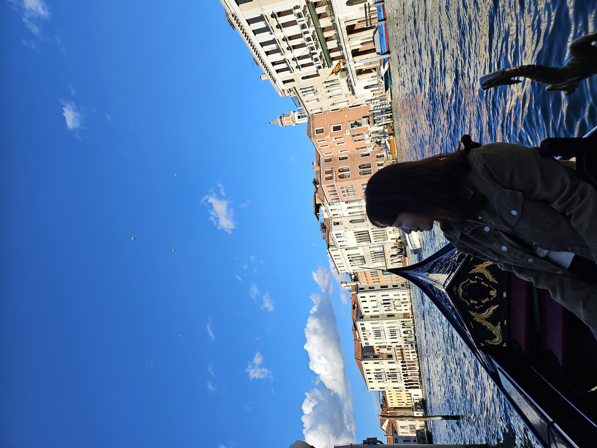
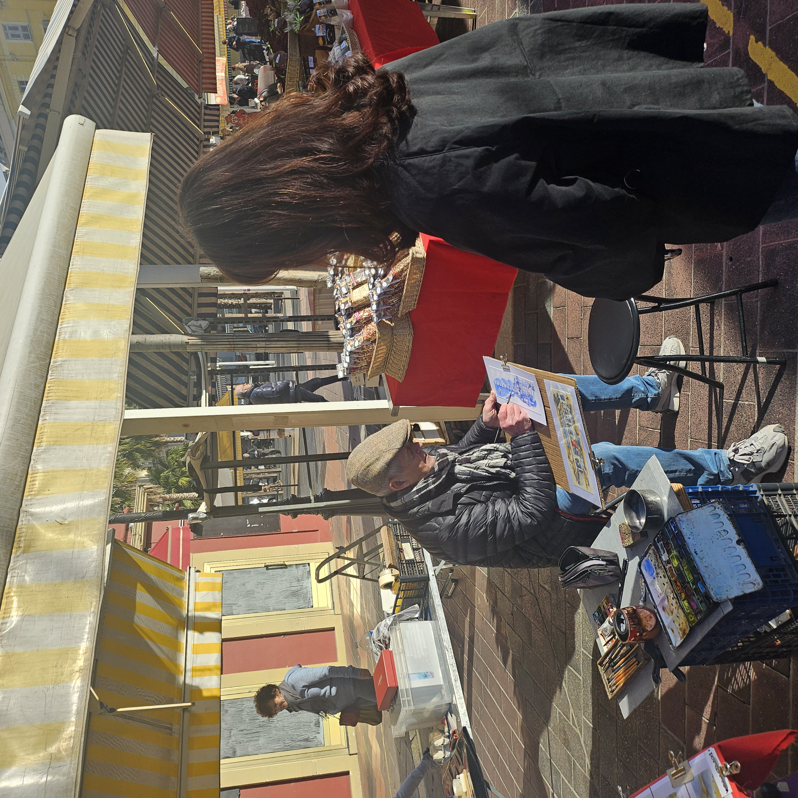
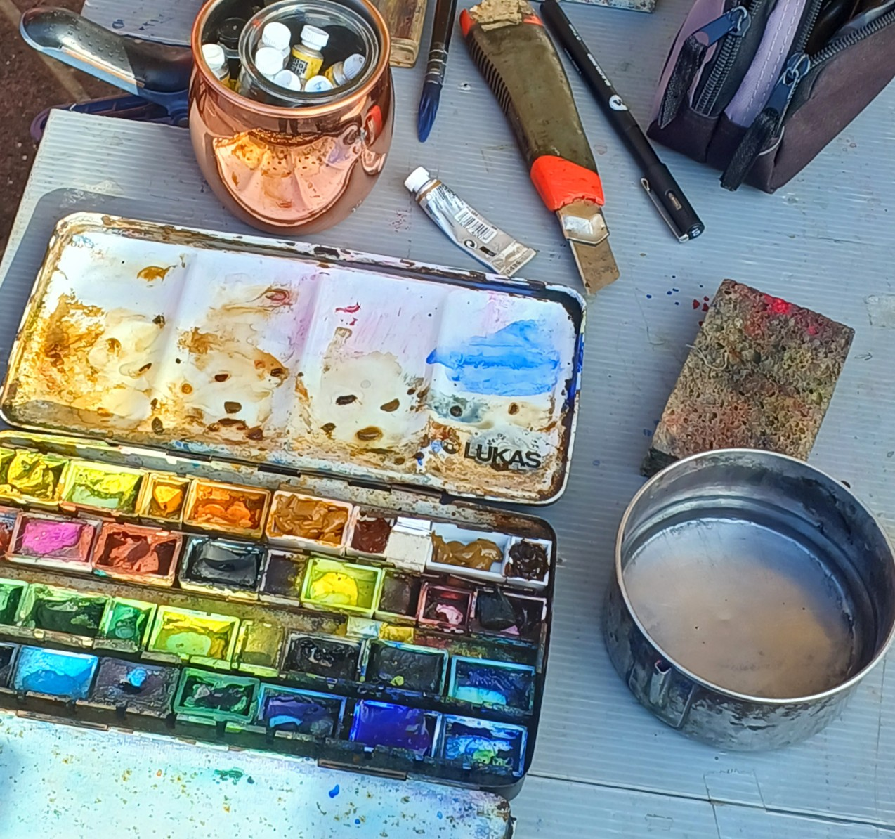
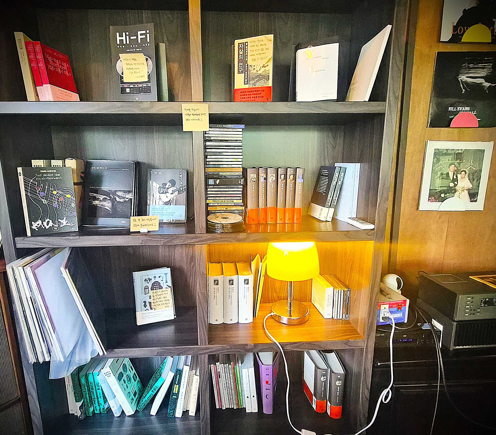

IMAGES · ART JOURNEY
Art Journey
Moments Worth Keeping
여행과 전시,
그리고 일상에서
오래 마음에 남은 장면을 담습니다.
A VISUAL ESSAY
시선이 머문 장면
사진이 먼저 이야기하고, 짧은 문장이 그 순간의 마음을 곁에서 잇습니다.

베네치아의 곤돌라
어릴 적 좋아했던 호프만의 뱃노래가 떠올랐습니다.
마치 그 한 장면 속에 들어온 듯,
음악이 들려오는 것만 같았습니다.

해 질 무렵의 시선
빛이 건물과 물 사이에 머무는 동안
익숙하지 않은 풍경도
잠시 나의 일상처럼 느껴졌습니다.

니스의 거리 화가
거리 한편의 작은 작업실에서
그리는 사람의 시간과
여행자의 시선이 잠시 만났습니다.

색이 머문 자리
여러 번 사용한 팔레트에는
완성된 그림보다 더 많은 계절과
손의 기억이 남아 있었습니다.

고흐 앞에 서다
사랑하는 고흐의 자화상 앞에 섰습니다.
그의 그림 너머로,
안타까운 마음이 조용히 전해졌습니다.

책과 음악이 머무는 곳
좋은 공간은 큰 목소리 대신
책과 빛, 오래된 물건들로
자신의 이야기를 들려줍니다.